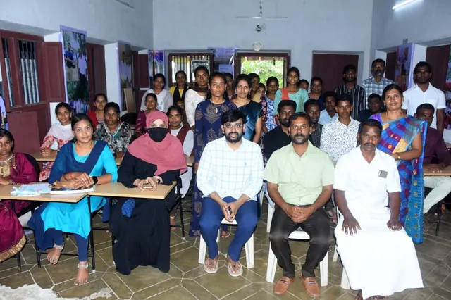
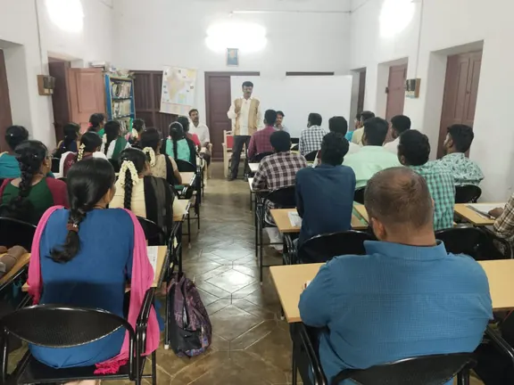

7 August 2025 · Kalangarai Free Training Centre
A Session Beyond the Classroom: Motivation to Action
Kalangarai organised a special motivational session for students preparing for the TNUSRB Police Constable and Sub-Inspector examinations, led by Dr. A. Arun Thamburaj, Mission Director, National Health Mission. He spoke about discipline, dedication, consistency, time management and self-confidence.
- Consistent preparation and disciplined study habits
- Understanding exam strategy and preparing systematically
- The mindset needed for a career in public service
- Staying committed despite challenges